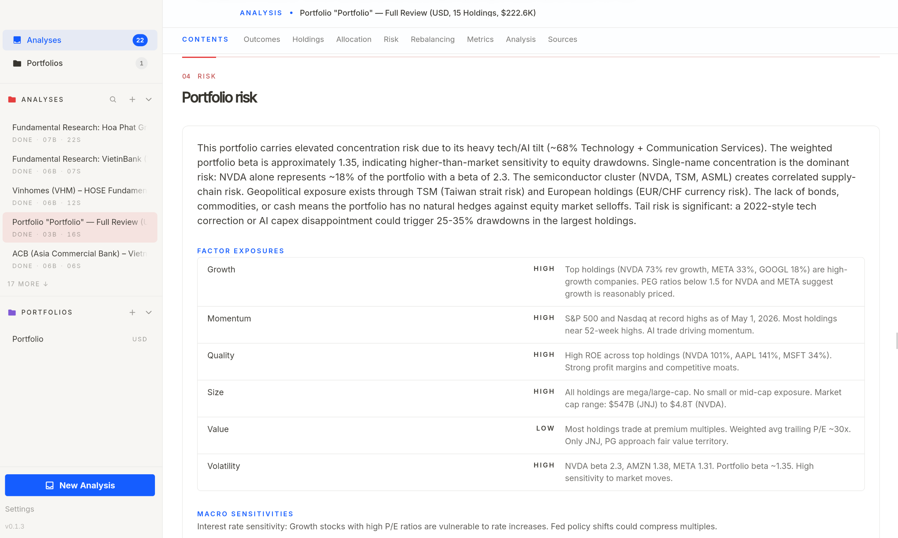
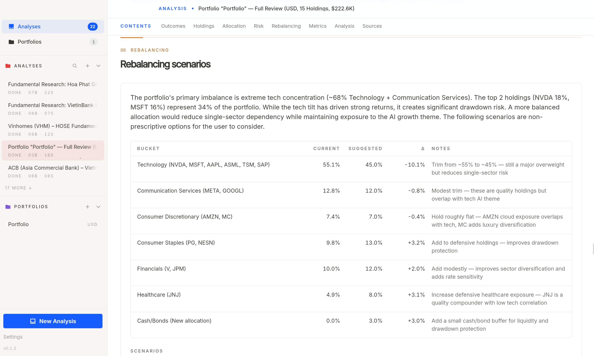
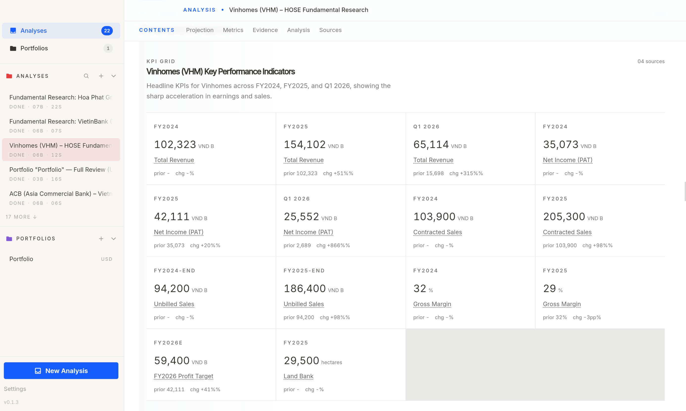
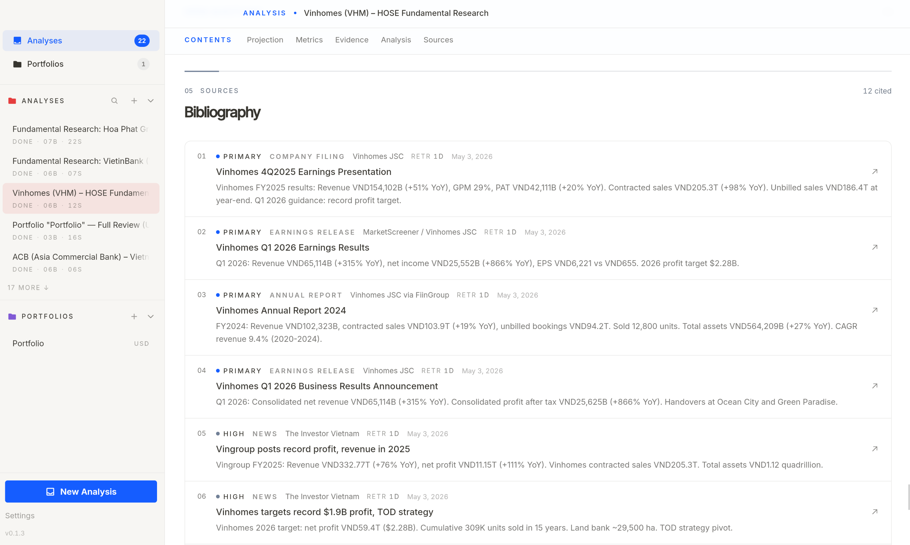
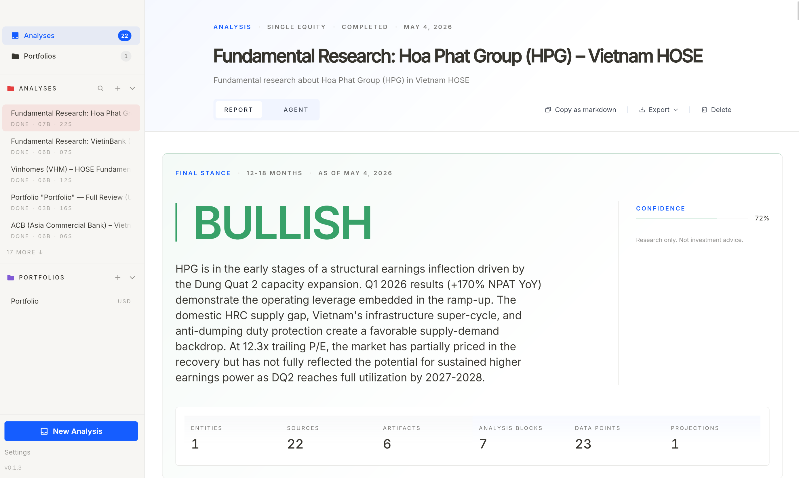

Stock and portfolio research through your own agent.
Ask about a ticker or sector, or add a portfolio and make the agent
review what you own. Reports stay on your machine.
Open source · Runs on your agent's auth, your own tokens, and your machine
Works with coding agents you already run
Review your portfolio as a whole
Add the positions you want reviewed. Infi keeps them on your machine and ties future reports to that portfolio.
Reports cover material positions, allocation, risk, and scenario options.
Risk exposures and macro sensitivities

Rebalancing scenarios — informational only

Research output with sources attached
Every report is organized into sections you can read, check, and come back to later.
Numbers and claims keep their citations, so you can open the original source.
Scenario cases side by side

Sources behind every claim

Final stance with confidence

What each report includes
Research is split into sections you can read, check, and come back to later.
Every claim has a source
Numbers and claims keep their citations, so you can open the original source from the report.
A clear final stance
Bullish, bearish, mixed, or neutral — with confidence, reasons, and what would change the view.
Scenario cases side by side
Base, upside, and downside cases are stored as separate sections when the research question calls for scenario analysis.
Stays on your computer
No account, no telemetry, no cloud sync. API keys live in your OS keychain.
12 financial data providers, built in
SEC filings, market data, news, screeners — Alpha Vantage, Polygon, Finnhub, Yahoo Finance, and more. Keys stay in your OS keychain.
Portfolio reviews cover the whole picture
Add a portfolio, then start a review. The report includes position reviews, allocation notes, risk notes, and scenario options.
Three steps. Then you read.
Ask or add a portfolio
Plain English. "Compare NVDA to AMD." "Is the energy sector overbought?" Or add a portfolio and ask where the risk points are.
Pick your agent
Infi detects coding agents on your machine — Claude Code, Codex, Gemini, OpenCode, or your own agent. It uses the agent's own auth.
Read the report
Thesis, key numbers, risks, scenarios, stance, and portfolio-specific position, allocation, and risk sections when a portfolio is attached. Saved on your machine.
Get Infi
Free and open source. macOS (Apple Silicon & Intel), Linux x86_64, Windows x64.